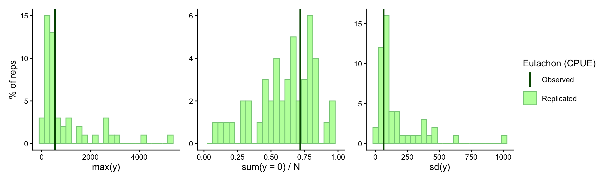
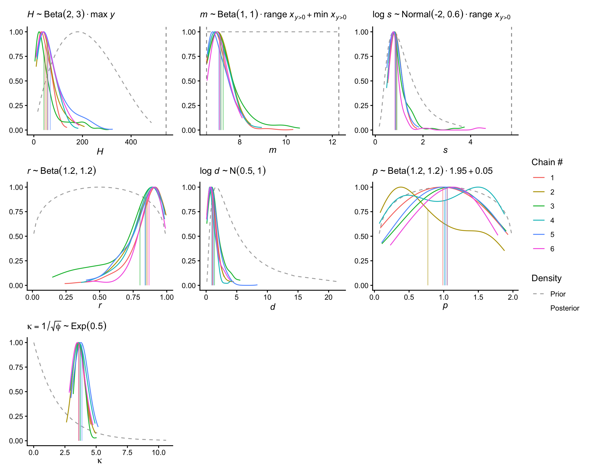
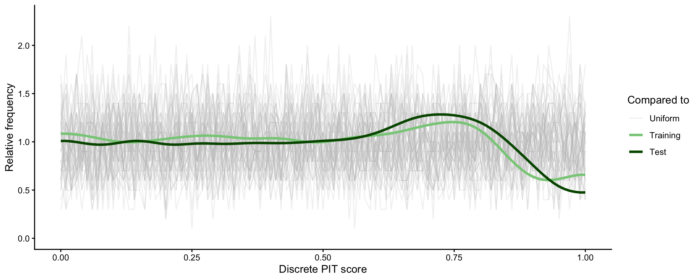
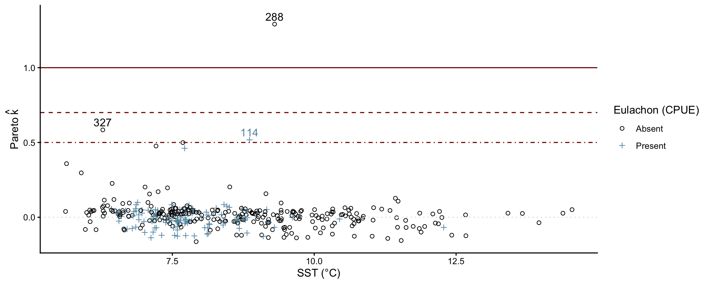
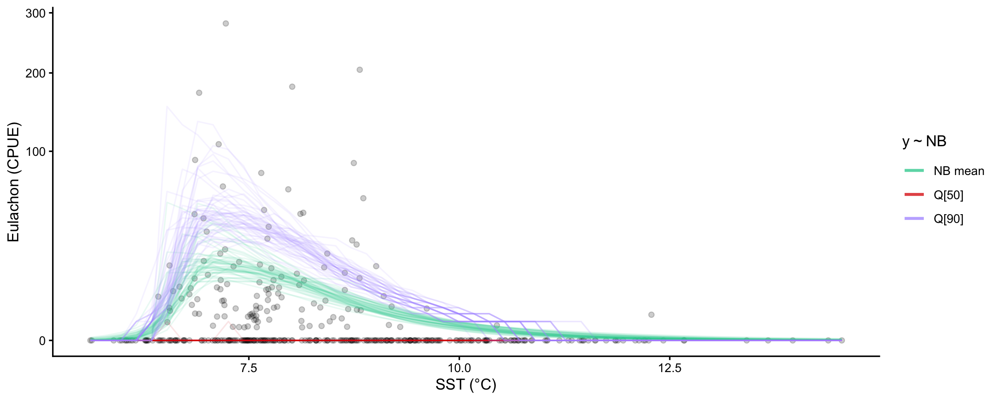

Hierarchy of time
hierarchy-of-time.RmdOverview
This vignette presents a hierarchical Bayesian workflow for modelling temporal (year-to-year) changes n the distribution of discrete species abundance, , along an environmental gradient, , using the modskurt function to predict mean abundance, . The model is specified as
…
Load packages and stan files
This section assumes you’ve already got modskurt
installed and running, if not, jump over to this packages’ home page.
# compile_stanmodels only runs when needed, so it doesn't hurt to keep these
# lines together in any analysis
library(modskurt)
compile_stanmodels()## [1] "Already compiled: discrete.stan"Case study - Eulachon vs. sea temperature over time
Use Northwest Pacific groundfish trawl survey data for Thaleichthys pacificus (eulachon, or candlefish) over the ocean temperature gradient - more info. Key variables are:
-
total_countthe number of individual redstripes caught during each trawl. -
tempaverage water temperature recorded at the net during the trawl. -
area_swepttotal area (ha) of water swept during the trawl (trawl length * net mouth diameter), this is the sampling effort used to observetotal_count. -
yearyear in which the data was collected.
data(eulachon)
eulachon## # A tibble: 2,430 × 8
## year depth area_swept do temp sal total_kg total_count
## <dbl> <dbl> <dbl> <dbl> <dbl> <dbl> <dbl> <dbl>
## 1 2012 57 1.70 4.58 12.5 33.6 0 0
## 2 2010 57.2 1.34 2.01 8.92 34.0 0 0
## 3 2012 57.6 1.70 1.03 8.50 34.0 0 0
## 4 2008 58.6 1.40 3.95 11.9 33.6 0 0
## 5 2013 58.6 1.51 3.10 10.5 33.6 0 0
## 6 2010 59.1 1.48 2.69 11.0 33.6 0 0
## 7 2013 59.2 1.55 0.819 8.71 34.0 0 0
## 8 2011 59.3 1.67 4.11 11.2 33.4 0 0
## 9 2010 59.4 1.57 2.39 8.55 33.8 0 0
## 10 2010 59.4 1.63 2.01 7.28 34.0 0 0
## # ℹ 2,420 more rowsA. Specify initial model
We’ll start with the simplest model that ignores time for now,
# specify simple model for latest year
spec <-
mskt_spec(data = eulachon[eulachon$year == max(eulachon$year),],
y = c('Eulachon (CPUE)' = 'total_count'),
x = c('SST (°C)' = 'temp'),
effort = c('Area swept (ha)' = 'area_swept'),
dist = 'nb',
shape = 'rdp',
subset_prop = 0.3)
str(spec)## List of 21
## $ sample_prior: int 0
## $ hp_H : num [1:2] 2 3
## $ hp_m : num [1:2] 1 1
## $ hp_s : num [1:2] -2 0.6
## $ hp_r : num [1:2] 1.2 1.2
## $ hp_d : num [1:2] 0.5 1
## $ hp_p : num [1:2] 1.2 1.2
## $ use_r : int 1
## $ fix_r : num 0.5
## $ use_d : int 1
## $ fix_d : num 0
## $ use_p : int 1
## $ fix_p : num 1
## $ use_zi : int 0
## $ hp_kap : num 0.5
## $ hp_g0 : num [1:2] 3 1.5
## $ hp_g1 : num 5
## $ Nrep : int 50
## $ xrep : num [1:50] 5.62 5.8 5.98 6.16 6.35 ...
## $ subset :function ()
## $ full :function (prop = 1, seed = NULL)
## - attr(*, "pars")= chr [1:7] "H" "m" "s" "r" ...
## - attr(*, "nms")=List of 3
## ..$ y : chr "Eulachon (CPUE)"
## ..$ x : chr "SST (°C)"
## ..$ eff: chr "Area swept (ha)"
## - attr(*, "dist")= chr "nb"
## - attr(*, "shape")= chr "rdp"
## - attr(*, "class")= chr [1:2] "mskt-spec" "list"B. Verify initial model specification
Prior predictions for summary statistics of y
check_prior_dist(spec)
OPTIONAL: refine model spec further
C. Fit subset model
fit_subset <-
mskt_fit(spec,
# use the subset only
use_subset = TRUE,
iter_warmup = 200,
iter_sampling = 100,
chains = 6,
parallel_chains = 6,
# for testing
show_messages = TRUE, show_exceptions = TRUE)
check_computation(fit_subset)## spec: nb[Hmsrdp] using 114 obs out of 381 (30% sample)
## post: 6 chains each with 100 draws (600 total)## $summary
## # A tibble: 7 × 10
## variable mean median sd mad q5 q95 rhat ess_bulk ess_tail
## <chr> <dbl> <dbl> <dbl> <dbl> <dbl> <dbl> <rha> <ess> <ess>
## 1 H 56.6 42.9 47.3 30.8 13.1 152. 1.01 162 (0.3) 229 (0.4)
## 2 m 7.16 7.03 0.524 0.385 6.63 8.03 1.02 164 (0.3) 179 (0.3)
## 3 s 0.886 0.804 0.405 0.181 0.579 1.37 1.02 172 (0.3) 53 (0.1)
## 4 r 0.836 0.883 0.150 0.0965 0.508 0.978 1.02 169 (0.3) 75 (0.1)
## 5 d 1.12 0.868 0.968 0.648 0.189 2.95 1.01 358 (0.6) 342 (0.6)
## 6 p 0.993 0.998 0.519 0.654 0.183 1.78 1.05 179 (0.3) 215 (0.4)
## 7 kap 3.67 3.62 0.410 0.396 3.11 4.40 1.02 278 (0.5) 333 (0.6)
##
## $diagnostics
## chain_id warmup sampling total num_divergent num_max_treedepth ebfmi
## 1 1 0.336 0.082 0.418 4 0 0.9491969
## 2 2 0.334 0.111 0.445 2 0 0.9173424
## 3 3 0.364 0.140 0.504 0 0 0.5943937
## 4 4 0.444 0.113 0.557 0 0 0.9384754
## 5 5 0.388 0.140 0.528 0 0 1.0060421
## 6 6 0.365 0.142 0.507 1 0 0.9422603OPTIONAL: refine model spec or fit parameters
Check subset model
# visual display of chain mixing and prior-data conflicts
check_post_dens(fit_subset, by_chain = TRUE)
# uses test set for discrete pit
check_post_calibration(fit_subset)
OPTIONAL: refine model spec or fit parameters
D. Fit full model
fit_full <-
mskt_fit(spec,
chains = 4,
parallel_chains = 4,
# for testing
show_messages = TRUE, show_exceptions = TRUE)
check_computation(fit_full)## spec: nb[Hmsrdp] using 381 obs out of 381 (100% sample)
## post: 4 chains each with 1000 draws (4000 total)## $summary
## # A tibble: 7 × 10
## variable mean median sd mad q5 q95 rhat ess_bulk ess_tail
## <chr> <dbl> <dbl> <dbl> <dbl> <dbl> <dbl> <rha> <ess> <ess>
## 1 H 20.3 18.1 8.95 6.79 10.5 36.4 1 2020 (0.5) 1868 (0.5)
## 2 m 7.02 7.03 0.196 0.182 6.67 7.32 1 1157 (0.3) 673 (0.2)
## 3 s 0.701 0.695 0.112 0.108 0.532 0.892 1 2253 (0.6) 2262 (0.6)
## 4 r 0.869 0.873 0.0568 0.0521 0.772 0.953 1 1146 (0.3) 770 (0.2)
## 5 d 1.49 1.34 0.873 0.861 0.345 3.11 1 1590 (0.4) 1981 (0.5)
## 6 p 0.966 0.942 0.508 0.610 0.204 1.82 1 2625 (0.7) 2139 (0.5)
## 7 kap 3.10 3.09 0.174 0.173 2.83 3.40 1 3049 (0.8) 2721 (0.7)
##
## $diagnostics
## chain_id warmup sampling total num_divergent num_max_treedepth ebfmi
## 1 1 2.760 2.576 5.336 0 0 0.8657852
## 2 2 2.896 2.774 5.670 1 0 0.8328147
## 3 3 2.923 2.918 5.841 2 0 0.8061614
## 4 4 3.372 2.818 6.190 0 0 0.9000476OPTIONAL: refine model spec or fit parameters
Check full model
check_post_influencers(fit_full)## pareto_khat Eulachon (CPUE) SST (°C) Area swept (ha)
## 114 0.52 57 8.9 1.7
## 288 1.29 0 9.3 2.0
## 327 0.58 0 6.3 1.3
E. Use the model
Plot summaries of the abundance distribution
# plot the distribution of abundance along the gradient
abundance_dist(fit_full, summaries = c('mean', 'median', 'q90')) +
scale_y_sqrt()
Calculate ranges of x for different percentages of abundance measures
# compose in row using patchwork
# (abundance_range(fit_full,
# capture_pct = 50,
# using_range = 'HAZ',
# based_on = 'mean',
# plotted = TRUE,
# range_colour = 'red') +
# labs(subtitle = '50% of highest mean counts')) +
# (abundance_range(fit_full,
# capture_pct = 90,
# using_range = 'ADL',
# based_on = 'mean',
# # specify left or right side limit
# region = 'left',
# plotted = TRUE,
# range_colour = 'blue') +
# labs(y = NULL, subtitle = '90% limit of mean count density')) +
# plot_layout(guides = 'collect')